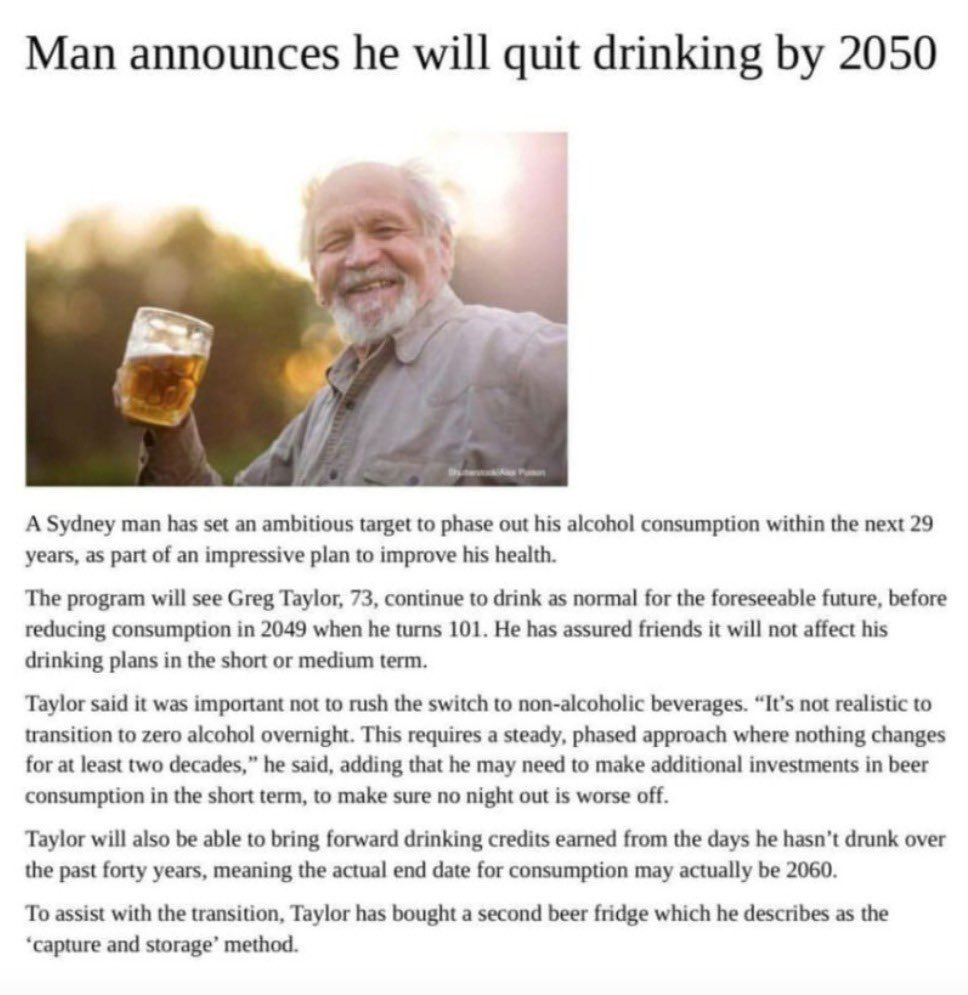
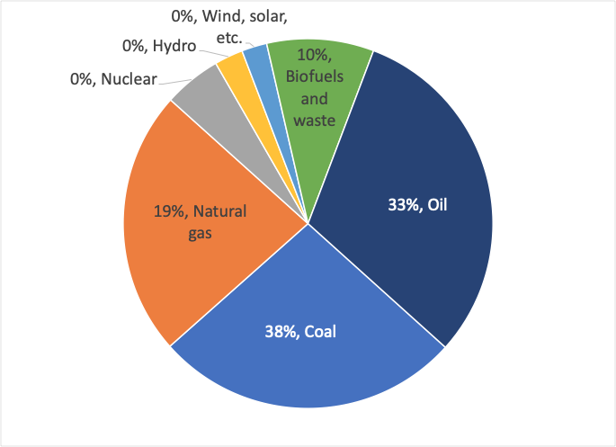

I’m Jonathan Burbaum, and this is Healing Earth with Technology: a weekly, Science-based, subscriber-supported serial. In previous installments of this serial, I have offered a peek behind the headlines of science, focusing on climate change/global warming/decarbonization. I have welcomed comments, contributions, and discussions, particularly those that follow Deming’s caveat , “In God we trust. All others, bring data.” With this issue, I’m pivoting slightly to a more direct approach.
COP26 is now over, and, like its 25 predecessor “Conference of Parties”, it’s produced a series of toothless political commitments that are loosely based on recommendations given by large teams of scientists. Sadly, such approaches, while intellectually honest, are seriously limited in scope, and thus doomed to failure in the long run. Given the continued naive commitments of our leaders, I must now propose a more aggressive pitch:
One planet. One solution. Now.
That’s intentionally provocative, but not prescriptive. No serial and no one person can possibly provide all the answers. But we must prepare to act with clear-headed decisions—any partial solution should bring the rest of the solution to the table as well, including what the tradeoffs are. We won’t get too many chances to get it right.
You can read Healing for free, and you can reach me directly by replying to this email. If someone forwarded you this email, they’re asking you to sign up. You can do that by clicking here .
If you really want to help spread the word, then pay for the otherwise free subscription. I use any fees to increase readership through Facebook and LinkedIn ads.
Today’s read: 9 minutes.
I’m not much for memes or other Internet detritus, but this one came from a buddy (and fellow energy nerd), Mark Johnson . I tracked it back to a Reddit post titled “Australia unveils revised climate change policy at COP26”. It’s a good metaphor for this installment, so I figured I’d start with something lighter.

“Net-zero” is a set phrase that universities, corporations, and buildings “pledge” to. Such pledges usually choose a target date several years into the future if it’s not already fait accompli. (The fulfilled pledges I’ve found come from environmental consulting firms!) But what does the phrase mean? Let’s dissect it. The emphasis is on the word ‘zero’, which sounds good, just like the Prohibition-era pledge of ‘T-total’ abstinence from alcohol (the origin of the word teetotaler). [That worked out well, didn’t it?] We certainly need to get to net-zero emissions globally if we expect to stabilize our atmosphere. But, just like “global” warming, it’s the adjective that adds nuance and complexity.
So, what do proponents mean by “net”? It implies an accounting framework, where credits of some kind balance emissions (debits) from outside the system (university, corporation, building). That sounds sensible, just like your “net” income is what you take home after taxes and other deductions are subtracted. But there’s the rub, deductions can offset emissions, so math games can be played. It shouldn’t be any surprise that major corporations are executing a “climate pledge” because they’ve mostly figured out how to exploit tax deductions to pay net-zero taxes ! So what’s to keep them from netting out their emissions as well?
There’s been a lot of ink on net-zero and a few common criticisms, including that it’s tough to measure, easy to cheat, and some methods count future capture against current emissions. All of these criticisms are valid, but they’re also all correctable. You can do an Internet search if you want those possible factoids, but I’d like to try to focus on Science and its interface with economics in this thread.
I’ve said it before, and I’ll repeat it. For practical purposes today, carbon is energy. Let’s look at the data:

Decarbonization is, by extension, abstinence from a primary energy source, something that has never happened in recorded human history. It is an academic assertion that emissions can be reduced, in absolute terms, by substituting alternative energy sources that don’t use carbon (the element) for storage. Like many theories, it’s good in theory . In practice, it’s a different story. As the chart above shows, most of the world’s energy sources produce carbon dioxide in practice . We must count biofuels because the carbon could be buried (“sequestered”) instead of being burned, and the atmosphere doesn’t particularly care where the carbon comes from. It’s easy to see how various authors can manipulate the math of big numbers (either deliberately or accidentally) because the sun provides 174 quadrillion watts of constant power to Earth, and we harness only a tiny part (<0.001%) of that. Only the “nuclear” wedge of the pie is independent of either current or past solar irradiation: Most of the energy we currently use was captured by photosynthesis, at least initially. But the abundance of “back of the envelope” calculations means that any opinionista who doesn’t bear profit-and-loss responsibility (like an academic) can prod those who do without consequence.
This context is the reason world leaders and corporate titans can pledge with impunity. It’s something that happens in the future, and intelligent people assure them that it’s possible, while their successors bear the responsibility of fulfillment. I don’t consider it disingenuous, I’m pretty sure these leaders think to themselves, “The details need to be fleshed out, that’s all.” So, let’s examine the details:
There isn’t a shared definition of net-zero, so let’s pick one. The US Green Building Council (of LEED certification fame) has a general formula for certifying a building to be Zero Carbon. It’s pretty straightforward, so I don’t think we will need to veer too far into math, and it’s likely to be a vanilla formula. Here it is: The “Total Carbon Emitted” minus “Total Carbon Avoided” by a Zero Carbon Certified building must be less than or equal to zero. Sensible and straightforward, right?
Well, not exactly. It turns out that a certified building can still emit carbon, so long as it “avoids” carbon somehow. Why shouldn’t the requirement be that the carbon is “absorbed” or “removed”? That, to me at least, would make more sense than avoidance. Like Mr. Taylor in the opening quip, it’s ludicrous to claim net-zero alcohol consumption because you’ve convinced a friend to avoid drinking!
Digging deeper, it turns out that “Total Carbon Avoided” is primarily a financial mechanism:
Carbon Avoided includes on-site renewable energy generated and exported to the grid, off-site renewable energy procurement, and the purchase of carbon offsets.
Thus, to “avoid” an emission, a USGBC Zero Carbon Certified building owner can purchase either carbon-free power (from the electric grid) or carbon offsets, no matter how much carbon the building emits.
I’ve covered the problem with carbon-free power previously, but the scientific truth is that an electron is an electron is an electron. Therefore, electricity (from the grid) isn’t renewable or non-renewable—it is produced on demand and delivered over short distances to the point of use. Carbon-free power may, or may not, replace carbon-based power. It depends on when the power is needed and what alternatives are available.
What about “offsets”? Using a financial lever to bring aspirations into line with reality is not new. In the Middle Ages, the omnipresent Catholic Church in Europe allowed sinners to buy their way into heaven by selling indulgences, a cash payment to the Church to offset a sin. This practice led to the Protestant Reformation because of its hypocrisy, and, in the meantime, it did very little to discourage sin!
But what exactly is an offset? USGBC says it’s
Sum CO2E for carbon offsets purchase
First off, the offset isn’t for the carbon dioxide . It’s for carbon dioxide equivalents. That’s an interesting distinction, since the activity of the building is going to generate carbon dioxide, yet it’s somehow acceptable to offset this emission with an equivalent gas? Another opportunity for mathematical shenanigans. So let’s dig a bit into the data.
There’s an online marketplace (one of several) for offsets, referred to as Verified Carbon Units (VCUs) here . Looking only at “registered” projects on this site, the largest one is telling: It’s the “Yingpeng HFC23 Decomposition Project”, a project in Zhejiang Province, China to remove the incredibly potent greenhouse gas, sulfur hexafluoride, from a fluorocarbon plant in China by burning it (producing more CO2, of course). Because of how potent the pollutant is, the Total Carbon Avoided here is staggering, but it’s avoiding the emission of an environmental pollutant. So buying this VCU would be the equivalent of an agreement to pollute less in China to balance the emission of carbon dioxide by a building in the US. That makes zero sense.
The largest category, accounting for 70% of the projects, falls under “Energy industries (renewable/non-renewable sources)”, and the most significant entry is a project called “Hydroelectric Project Ituango”, a 2.4GW hydroelectric power plant in Colombia, on the Cauca River near the city of Medellin. But if this is intended to reduce a carbon footprint, what was the choice? Was that plant going to be replaced by a coal-fired power plant otherwise? [By the way, Ituango is not yet online, 12 years after construction commenced, but the VCU is ‘registered’!] So, buying this VCU is an agreement to provide hydroelectric power to Medellin in the future to balance the emission of carbon dioxide by a building in the US today. Again, that makes no sense.
The second-largest category is “Agriculture, Forestry, and Other Land Use”, and the most significant entry is an agricultural project called “Katingan Peatland Restoration and Conservation Project”. Now, maybe, here’s some carbon capture! The project covers “GHG emission reductions and removals from avoiding unplanned and planned deforestation and forest degradation ” [emphasis mine] in the very-productive Indonesian rainforest. So, it’s an agreement to avoid clear-cutting the Indonesian rainforest to balance the emission of carbon dioxide in the US. Does this make any more sense than the previous examples?
Of course, trees absorb more CO2 than barren land, but the land would not be empty for long once cleared. So, is the growth of new trees or crops on the cleared land taken into account? Whatever the true answer is, it’s buried in piles of reports, jargon, and other people’s spreadsheets so, let’s see if we can understand the accounting details.
The project documentation claims to measure the annual amount of carbon release avoided, based on an agreement to preserve 150,000 hectares of forest for sixty years, thereby maintaining it as a carbon sink. The question for a carbon footprint is, however, what was the choice? Was the forest going to be cut down? What was it doing before ? The impact is listed ad an amazingly precise 7,451,846 tCO2E per year, 1 but a tropical rainforest can only capture something like 15 tCO2 per hectare, 2 for a total of 2,250,000 tCO2. So two-thirds of this “offset” is over and above the capture of carbon dioxide (which was happening anyway!), and we get to count it for every year that we don’t clear-cut! [The balance appears to be ‘avoiding’ scorched earth destruction of the rainforest by stopping the additional burning of peat!]
Well well. I think the picture is clear. An offset as a VCU is contractually avoiding a choice that could have led to more emissions if an entity had made a different choice, whether it’s releasing a potent pollutant, choosing coal power over hydroelectric, or clear-cutting a forest. Instead of removing carbon dioxide from the air (as any financial analogy should dictate), it keeps virtual carbon from being released into the air—carbon or other greenhouse gas that could have been emitted but wasn’t. It’s not an offset. It’s a reverse ransom! Pay us, or we will release the carbon, and the environment gets hurt. Sure, it will stimulate the development of renewables indirectly, but it solves absolutely nothing about climate change.
So, getting to net-zero by buying offsets is the environmental equivalent of negotiating with kidnappers. If you want to make money from avoidable carbon emissions, then find a swath of rainforest and threaten to clear-cut it unless you’re paid to keep it pristine. Plan a hydroelectric plant, and then threaten to build a coal plant instead unless you’re paid not to. Identify a nasty pollutant and then threaten to release it unless you’re paid to dispose of it properly. And it’s all an “indulgence” paid by those who continue to emit carbon dioxide but wish to enter environmental heaven.
To put it bluntly, that approach sucks. But, what is humanity’s choice? Since carbon and energy are intimately connected, decarbonization means that everyone needs to use dramatically less energy, not just those who can afford to pay. Alternatively, we need to figure out a cost-effective way to make net-zero an environmentally meaningful calculation, replacing “Total Carbon Avoided” with “Total Carbon Captured” while making the deal economically attractive.
If you want to know how to pull this off, read the earlier issues.
As the sun comes up this morning, there’s still only one practical solution to direct air carbon capture, and by extension, to climate change. The sooner we start implementing it, the sooner we can solve other pressing global problems. But if we continue to perseverate, it will only get more challenging, and the situation will worsen.
Until next time.